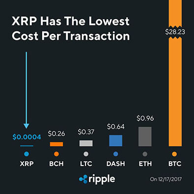

Mi az a Ripple? Útmutató kezdőknek
Ripple egy kicsit komplexebb, mint egy átlagos kriptopénz. Amikor valaki a Ripple-t emlegeti több dolgot is érthet ez alatt. Lehet a digitális valuta (XRP), a nyílt fizetési rendszer amelyen a valuta használható (Ripple hálózat), csakúgy mint a cég amely létrehozta ezt.
Ripple mint cég 2012-ben jött létre, és már egy bevétellel rendelkező privát cég, amely több mint 100 pénzügyi intézettel áll kapcsolatban.
Ripple célja, hogy egy olyan platform legyen ahol bárki küldhet, bármilyen valutát másodpercek alatt a világ bármely pontjára. Ez az ambiciózus cél olyan régi rendszereket hivatott leváltani mint a Western Union és SWIFT.
Ripple és XRP:
Ripple protokoll
A Ripple tranzakció protokoll egy valós idejű elszámolási rendszer, amely arra lett tervezve, hogy a bankok ezt használják valuta váltásra és átutalásra. Olyan ősrégi rendszerek lecserélésére alkalmas mint a SWIFT, amelyet 1972 óta használnak a bankok. A Ripple protokoll hatalmas előnnyel rendelkezik mind tranzakció idő- és nyomon követésben.
Bitcoin-hoz hasonlóan blokklánc technológiát használ, azonban a Ripple hálózat elzárt így nem csatlakozhat be bárki. Ami azt jelenti, hogy ez egy meglehetősen központi rendszer.
XRP – Valuta a Ripple protokollnak
XRP egy kriptopénz amely azért lett létrehozva, hogy ez legyen a közös pénznem amely a különböző devizák közötti pénzutalások alapját képezi. Ez nem csak sokkal olcsóbbá, de sokkal gyorsabbá is teszi az utalásokat. Egy tranzakció elvégzése, és ellenőrzése maximum 4 másodperc, amíg egy SWIFT utalás napokba telik.
Hozzá kell tenni, hogy az XRP nem szükséges, hogy a Ripple hálózat működjön, és a bankok is használhatják a Ripple hálózatot anélkül, hogy az XRP-t elfogadnák.
Miben különbözik Ripple és Bitcoin?
Annak ellenére, hogy Ripple-nek és Bitcoin-nak van némi hasonlósága, nagyon eltérnek egymástól. Mint kriptopénz Ripple is kriptográfiát használ, hogy biztosítsa a tranzakciókat, viszont nincs nyilvános blokklánca.
Ehelyett közreműködő bankok és pénzügyi intézmények alkotják a hálózat részét amelyek megerősítik a tranzakciókat.
Ripple tranzakciók mérföldekkel gyorsabbak Bitcoin-nál. Ripple képes 1500 tranzakciót lebonyolítani másodpercenként, amíg Bitcoin 7 tranzakció/másodperccel dolgozik. Egy nemzetközi tranzakciót pedig képes 3-4 másodperc alatt elvégezni, amíg Bitcoin blokk megerősítésének ideje 10 perc.
Ripple tranzakció ár összehasonlítás más kriptopénzekkel. Forrás: Twitter @ripple
XRP-t nem lehet bányászni
Amíg Bitcoin-ból 21 millió darab van addig 100 milliárd XRP van összesen, amit mind kibocsátottak, 20 milliárd maradt a készítőknél. Jelenleg 38 milliárd van forgalomban, havonta 1 milliárd darabot fognak beleengedni a rendszerbe, amelyeket az XRP-t használni vágyó bankok vásárolhatnak meg az aktuális piaci áron. Ha nem fogy el a teljes 1 milliárd darab, akkor azt visszazárják és hozzáadják a sor végéhez. Mindezt okos szerződés segítségével.
Aggodalmak
Titoktartás
Kriptopénzek mint a titoktartás és anonimitás úttörői állnak a köztudatban. Az, hogy Ripple kizárólagosan bankoknak készíti platformját néhány felhasználót aggodalommal tölt el, hogy a Nagy Testvér rajta tartja a szemét a tranzakciókon.
Centralizáltság
Míg más kriptopénzek decentralizáltságot hangsúlyozzák, addig Ripple egy meglehetősen centralizált rendszerrel dolgozik. Az sem segít, hogy Ripple hatalmas mennyiségű XRP-nak a tulajdonosa. Habár a lépés, hogy okos szerződésbe zárják az XRP-kat mindenképpen egy jó irányba tett lépésnek számít. Ezzel együtt Ripple elsődleges tervei között szerepel, hogy javítsanak a decentralizáltságukon.
Ripple vásárlás és tárolás
Ripple-t egy kicsit nehezebb beszerezni mint Bitcoin-t vagy Ethereum-ot.
Euróért Gatehub-on lehet vásárolni, SEPA utalással. Azonban nagyon rosszul váltanak más váltókhoz képest. Gatehub egy Ripple tárca-ként is funkciónál.
Fontos megjegyezni, hogy a Ripple tárcák aktiválásához kell 20 XRP. Tehát befizetsz egy tárcára 100 XRP-t csak 80 XRP-t fogsz tudni kifizetni. Mivel Binance egy váltó weboldal nem tárca, ezért ott ez nem igaz, de Gatehub-on igen.
Másik opció a kereskedő weboldalak mint Binance vagy Bitfinex. Ezeken az oldalakon azonban Bitcoin-t vagy Ethereum-ot kell először váltani. Bitfinex-en ugyan lehet Euró-t is beutalni, de csak személyazonosság igazolása után, ami a hatalmas forgalom miatt hónapokba is telhet.
Binance és Bitfinex nem számít kezdőbarátnak, de útmutatónkkal könnyen ki lehet igazodni.
Szoftveres tárca a Toast wallet, amely elérhető Windows, Android, IOS, Mac és Linux-on.
Ha nagyobb összegekben szeretnénk vásárolni mindenképpen megéri beszerezni egy hardver tárcát, mint a Ledger Nano S amely támogatja az XRP-t. Ezek a hardver tárcák sokkal biztonságosabbak mint a váltók weboldalai.
Fogadtatás
Azáltal, hogy a bankok elfogadják a Ripple hálózatot és XRP-t ad a folyamatnak egyfajta hitelességet, legalábbis befektetői szempontból.
A kriptopénz közösségben azonban vegyes érzelmekkel fogadják Ripple-t. Centralizáltsága szöges ellentétben van a legtöbb kriptopénz filozófiájával.
A többi kriptovalutával ellentétben, amelyek a gyakorlatilag a bankok elpusztításán dolgozik addig Ripple arra törekszik, hogy a pénzügyi intézetekkel együtt dolgozzon.
Záró gondolatok
Ripple teljes jövője a bankok adaptációján múlik. A bankok nélkül a platform gyorsan feledés homályába veszne. De ha egyre több bank kezdi el használni, hatalmas szerepe lehet a világ körüli pénzmozgatásban.
Mivel Ripple teljesen a banki szekcióra koncentrál, átlag ember nem igazán fogja tudni használni az XRP-t.


2018. Január 07.